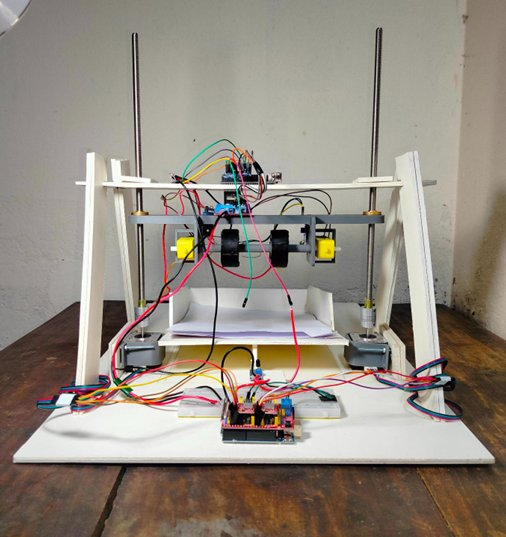
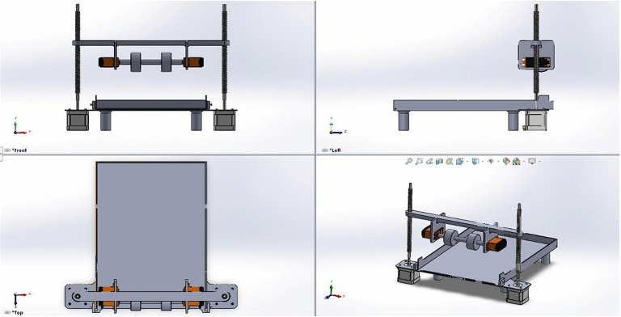

Automated Paper Grading and Dispensing System
A Raspberry Pi machine that grades exam sheets with OCR and feeds them out one sheet at a time.
Read more
- Problem: Grading paper exams by hand is slow, repetitive and error-prone.
- The system: A camera captures each answer sheet. OCR (Google Cloud Vision) reads the answers and checks them against a stored key, and the score is shown on a laptop. A roller mechanism then dispenses the graded sheet and feeds the next one.
- My role: I designed the NEMA17 lead-screw paper-feed mechanism, which lowers the roller carriage by 0.12 mm per sheet (the thickness of 100 GSM paper), and integrated the Raspberry Pi control for the OCR grading pipeline.
- Result: Built and demonstrated as a working prototype (MTE 4108 Design of Mechatronic Systems sessional).
